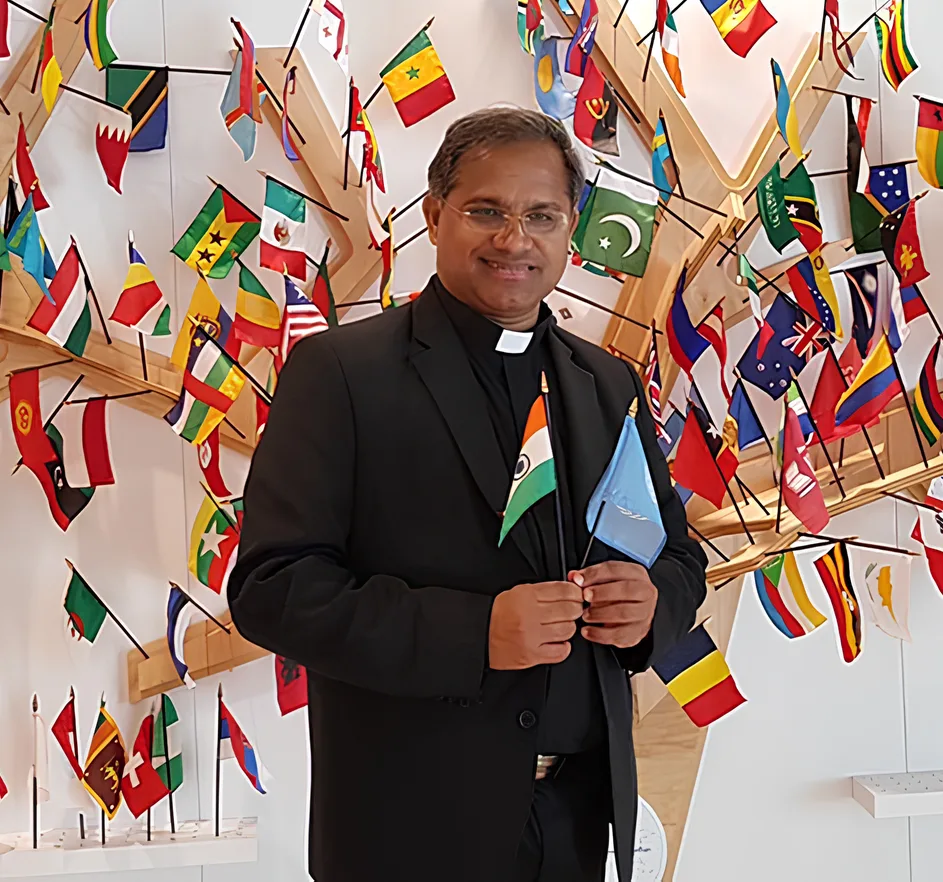

CMI Priest · UN NGO Representative · Cultural Ambassador
Dr. Fr. Roby
Kannanchira CMI
Director, Chavara Cultural Centre, Delhi
A visionary leader dedicated to promoting interfaith harmony, cultural preservation, and social empowerment. His efforts have touched lives across the globe through faith, dialogue, and compassionate service.

UN NGO Representative
New York, Geneva & Vienna